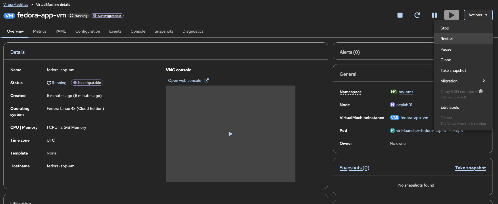
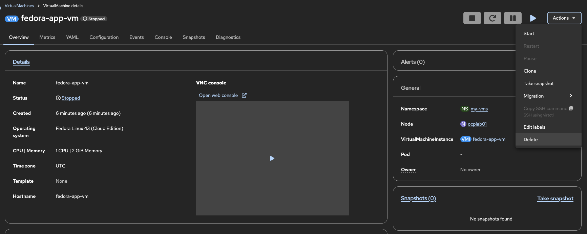
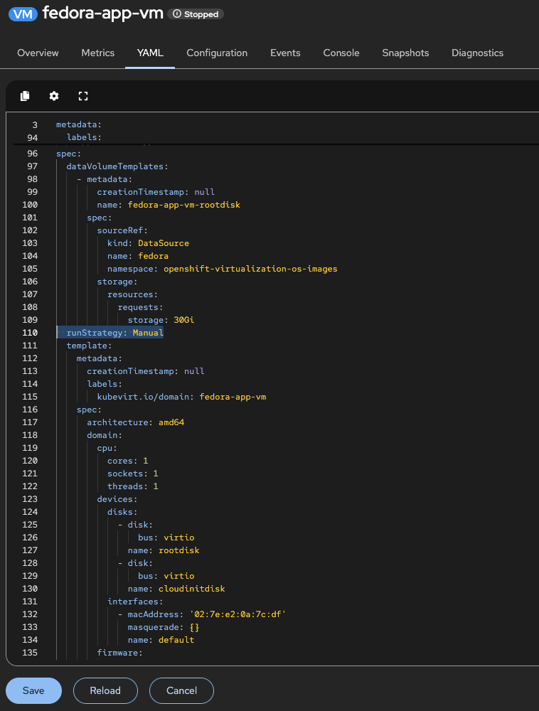

ビーディング VM ライフサイクル状態と基本操作
概要
OpenShift Virtualization での仮想マシンのライフサイクルを理解することは、効果的な仮想マシン管理、トラブルシューティング、および自動化に不可欠です。このガイドでは、VirtualMachine と VirtualMachineInstance リソースの関係、仮想マシンが取ることができる状態、およびライフサイクル全体で仮想マシンを管理するための方法を説明します。
テスト済みバージョン:
OpenShift 4.20
前提条件
-
OpenShift 4.18 以上に OpenShift Virtualization がインストールされている
-
OpenShift Web コンソールまたは CLI ツール (
oc,virtctl) のアクセス権 -
クラスター内に少なくとも 1 つの仮想マシンが作成されている (テンプレートを使用したWebコンソールからのVMの作成を参照)
VirtualMachine と VirtualMachineInstance
OpenShift Virtualization は、仮想マシンを管理するために 2 つの主要なリソースを使用します:
VirtualMachine (VM)
VirtualMachine リソースは、仮想マシンの永続的な定義です。これは、仮想マシンの名前と名前空間、CPU とメモリー構成、ディスクとネットワーク接続、ブート順序とファームウェア設定、実行戦略 (仮想マシンがどのように動作するか) を定義するテンプレートまたは仕様と考えることができます。
VirtualMachine リソースは、仮想マシンが実行中かどうかに関係なく存在します。
# VirtualMachine リソースのリスト表示
oc get vm -n my-vms例出力:
NAME AGE STATUS READY
fedora-app-vm 14m Running TrueVirtualMachineInstance (VMI)
VirtualMachineInstance リソースは、実際の仮想マシンの実行インスタンスを表します。仮想マシンが開始されると、VMI が作成され、仮想マシンが停止すると VMI が削除されます。VMI には、
-
実行時情報 (IP アドレス、ノード配置)
-
現在のフェーズ/状態
-
ゲストエージェント情報 (インストールされている場合)
が含まれます。
# VirtualMachineInstance リソースのリスト表示
oc get vmi -n my-vms例出力:
NAME AGE PHASE IP NODENAME READY
fedora-app-vm 78s Running 10.128.0.184 ocplab01 True| 停止された仮想マシンには VirtualMachine リソースが存在しますが、VirtualMachineInstance リソースは存在しません。仮想マシンを開始すると、VMI が作成されます。停止すると、VMI が削除されますが、VirtualMachine リソースは残ります。 |
VM ライフサイクル状態
仮想マシンは、ライフサイクル中にいくつかの状態に移行します。これらの状態を理解することは、モニタリングとトラブルシューティングに役立ちます。
状態の説明
| 順序 | 状態 | 説明 | VMI が存在するか |
|---|---|---|---|
1 |
停止 |
仮想マシンが定義されているが実行中ではありません。コンピュートリソースが消費されていません。 |
いいえ |
2 |
待機 |
前提条件 (ストレージ、ネットワーク) が待機中の VMI が作成されています。 |
はい |
3 |
スケジューリング |
Kubernetes スケジューラーが適切なノードを見つけています。 |
はい |
4 |
開始 |
仮想マシンが割り当てられたノードでブートされています。 |
はい |
5 |
実行中 |
完全に動作し、接続を受け入れています。 |
はい |
6 |
一時停止 |
VM の実行が凍結されています。メモリー内の状態が保存されます。 |
はい |
7 |
停止中 |
優雅なシャットダウンが進行中です。 |
はい |
8 |
終了中 |
VMI のリソースの最終クリーンアップが行われています。 |
はい (短期間) |
VM ライフサイクル管理
仮想マシンの開始
停止された仮想マシンを開始するには:
Web コンソール:
-
仮想化 → 仮想マシン に移動します
-
リストから VM を見つけます
-
VM の名前をクリックして詳細を開き、次に アクション → 開始 をクリックします
-
または、3 つのドットのメニュー (三角形) をクリックし、開始 を選択します

CLI:
virtctl start fedora-app-vm -n my-vms開始が確認された:
# VM の状態を確認
oc get vm fedora-app-vm -n my-vms
# VMI が作成されたことを確認
oc get vmi fedora-app-vm -n my-vms例出力:
NAME AGE STATUS READY
fedora-app-vm 14m Running True
NAME AGE PHASE IP NODENAME READY
fedora-app-vm 78s Running 10.128.0.184 ocplab01 True仮想マシンの停止
仮想マシンを停止すると、優雅なシャットダウンが行われ、VMI が削除されます。
Web コンソール:
-
VM の詳細ページに移動します
-
アクション → 停止 をクリックします

CLI (優雅な停止):
virtctl stop fedora-app-vm -n my-vmsCLI (強制停止):
VM が反応しない場合に使用します:
virtctl stop fedora-app-vm -n my-vms --force| 強制停止は、電源コードを引くことと同等です。優雅なシャットダウンが失敗した場合にのみ使用してください。 |
停止が確認された:
# VM が停止状態を示す必要があります
oc get vm fedora-app-vm -n my-vms
# VMI が存在しないことを確認
oc get vmi fedora-app-vm -n my-vms例出力:
NAME AGE STATUS READY
fedora-app-vm 14m Stopped False
Error from server (NotFound): virtualmachineinstances.kubevirt.io "fedora-app-vm" not found仮想マシンの一時停止と再開
一時停止は、VM の実行を凍結し、メモリー内の状態を保存します。これは、
-
CPU リソースを一時的に解放する
-
一貫したスナップショットを取る
-
デバッグや検査を行うために役立ちます
重要: 一時停止された仮想マシンは、ノード上でメモリーを使用します。CPU の実行は一時停止されます。
Web コンソール:
-
VM の詳細ページに移動します
-
アクション → 一時停止 をクリックします
-
再開するには、アクション → 再開 をクリックします


CLI:
# VM を一時停止
virtctl pause vm fedora-app-vm -n my-vms
# VM を再開
virtctl unpause vm fedora-app-vm -n my-vms一時停止状態の確認:
oc get vm fedora-app-vm -n my-vms例出力:
NAME AGE STATUS READY
fedora-app-vm 14m Paused False仮想マシンの再起動
再起動は、停止後に開始を行います。以下の場合に使用します:
-
ゲスト OS 設定の変更が必要な場合
-
ゲスト OS の問題から回復する必要がある場合
-
VM の状態を更新する必要がある場合
Web コンソール:
-
VM の詳細ページに移動します
-
アクション → 再起動 をクリックします

CLI:
virtctl restart fedora-app-vm -n my-vms| 再起動は、優雅なシャットダウンが完了するまで待ちます。ゲスト OS が反応しない場合、再起動は長時間かつ、まず強制停止が必要になる場合があります。 |
仮想マシンの削除
仮想マシンを削除するときは、関連するストレージ (PVCs/DataVolumes) を削除するかどうかを選択できます。
Web コンソール:
-
VM の詳細ページに移動します
-
アクション → 削除 をクリックします
-
ディスクの削除を選択するかどうかを確認する確認ダイアログに入ります
-
削除 をクリックします


CLI (仮想マシンの削除、ディスクを保持):
oc delete vm fedora-app-vm -n my-vmsデフォルトでは、VM によって所有されている DataVolume は削除されます。保持するには、まず所有者参照を削除するか、Web コンソールのオプションを使用してください。
削除が確認された:
# VM は存在しない必要があります
oc get vm fedora-app-vm -n my-vms
# ディスクが保持されているかどうかを確認 (必要に応じて)
oc get pvc -n my-vms例出力:
Error from server (NotFound): virtualmachines.kubevirt.io "fedora-app-vm" not found
my-vms 名前空間でリソースが見つかりません。| VM の削除は永久的です。重要なデータのバックアップを削除前に行うことを確認してください。 |
VM 状態の監視
VM と VMI の状態の確認
詳細な VM 情報:
oc describe vm fedora-app-vm -n my-vms例出力 (関連部分):
Name: fedora-app-vm
Namespace: my-vms
Labels: app=fedora-app-vm
...
Status:
Conditions:
Last Transition Time: 2026-03-05T17:10:11Z
Status: True
Type: Ready
Message: All of the VMI's DVs are bound and ready
Reason: AllDVsReady
Status: True
Type: DataVolumesReady
Status: True
Type: AgentConnected
Printable Status: Running
Ready: true
Run Strategy: Manual確認すべき主要部分:
-
Status.Conditions - 現在の状態と問題 (もし有い) を示します
-
Status.PrintableStatus - ユーザーが読みやすい状態
-
Status.Ready - VM が使用可能かどうか
詳細な VMI 情報:
oc describe vmi fedora-app-vm -n my-vms例出力 (関連部分):
Name: fedora-app-vm
Namespace: my-vms
...
Status:
Guest OS Info:
Id: fedora
Kernel Release: 6.17.1-300.fc43.x86_64
Name: Fedora Linux
Pretty Name: Fedora Linux 43 (Cloud Edition)
Version Id: 43
Interfaces:
Interface Name: enp1s0
Ip Address: 10.128.0.184
Mac: 02:7e:e2:0a:7c:df
Name: default
Node Name: ocplab01
Phase: Running
Phase Transition Timestamps:
Phase: Pending
Phase: Scheduling
Phase: Scheduled
Phase: Running確認すべき主要部分:
-
Status.Phase - 現在のライフサイクルフェーズ
-
Status.Interfaces - IP アドレスなどのネットワーク情報
-
Status.NodeName - VM が実行されているノード
-
Status.GuestOSInfo - ゲスト OS の詳細 (ゲストエージェントがインストールされている場合)
条件の理解
VM は、その状態を示す条件を報告します。これらの条件を確認するには:
oc get vm fedora-app-vm -n my-vms -o jsonpath='{.status.conditions}' | jq例出力:
[
{
"lastTransitionTime": "2026-03-05T17:10:11Z",
"status": "True",
"type": "Ready"
},
{
"message": "All of the VMI's DVs are bound and ready",
"reason": "AllDVsReady",
"status": "True",
"type": "DataVolumesReady"
},
{
"message": "cannot migrate VMI: PVC fedora-app-vm-rootdisk is not shared...",
"reason": "DisksNotLiveMigratable",
"status": "False",
"type": "LiveMigratable"
},
{
"status": "True",
"type": "AgentConnected"
}
]一般的な条件:
| 条件 | 意味 |
|---|---|
Ready |
VM が実行中でアクセス可能 |
Paused |
VM の実行が一時停止されている |
AgentConnected |
QEMU ゲストエージェントが通信している |
Synchronized |
VM 仕様が VMI に同期されている |
VM イベント
イベントは、仮想マシンに関する詳細な情報を提供します:
# 特定の VM のイベントを取得
oc get events -n my-vms --field-selector involvedObject.name=fedora-app-vm例出力:
LAST SEEN TYPE REASON OBJECT MESSAGE
14m Normal SuccessfulDataVolumeCreate virtualmachine/fedora-app-vm Created DataVolume fedora-app-vm-rootdisk
90s Normal SuccessfulCreate virtualmachine/fedora-app-vm Started the virtual machine by creating the new virtual machine instance fedora-app-vm
90s Normal SuccessfulCreate virtualmachineinstance/fedora-app-vm Created virtual machine pod virt-launcher-fedora-app-vm-fktmb
84s Normal Created virtualmachineinstance/fedora-app-vm VirtualMachineInstance defined.
84s Normal Started virtualmachineinstance/fedora-app-vm VirtualMachineInstance started.リアルタイムでイベントを監視する:
oc get events -n my-vms -w一般的なイベントとその意味:
| イベント | 説明 |
|---|---|
SuccessfulCreate |
VMI が成功して作成されました |
Started |
VM が成功して開始されました |
Stopped |
VM が優雅なシャットダウンで停止されました |
Killing |
強制停止が開始されました |
FailedScheduling |
適切なノードを見つけられませんでした |
FailedCreate |
VMI の作成に失敗しました (詳細を確認してください) |
実行戦略
実行戦略は、VM がライフサイクル中に自動的にどのように動作するかを定義します。戦略は VM 仕様に設定され、VM が何らかの理由で停止した場合に自動的に開始し、停止後に再起動するか、停止して保持するかを決定します。
利用可能な実行戦略
| 戦略 | 動作 | 使用例 |
|---|---|---|
|
VM は、ゲストのシャットダウンを含め、どなたでも何らかの理由で停止した場合に自動的に開始し、再起動します。 |
常に実行中でなければならない生産ワークロード |
|
VM は、障害時にのみ自動的に開始し、再起動します。ゲストのシャットダウンは VM を停止して保持します。 |
クラッシュから回復する必要があるサービスですが、意図的なシャットダウンを尊重する必要があるサービス |
|
VM は、Web コンソールまたは |
開発/テスト VM または特定のスケジューリング要件を持つワークロード |
|
VM は停止して保持されます。開始コマンドは無視されます。 |
一時的に退役された VM またはメンテナンスモード |
実行戦略の設定
YAML で:
apiVersion: kubevirt.io/v1
kind: VirtualMachine
metadata:
name: my-vm
spec:
runStrategy: Always # または RerunOnFailure、Manual、Halted
template:
# ... VM テンプレート仕様Web コンソール:
-
VM の詳細ページに移動します
-
YAML タブをクリックします
-
spec.runStrategyフィールドを変更します -
保存 をクリックします

runStrategy と非推奨の running フィールドを同時に使用することはできません。新しい VM の場合は、runStrategy を使用してください。
|
要約
以下のことを学びました:
-
VirtualMachine と VirtualMachineInstance リソースの違い
-
VM ライフサイクル状態と移行
-
VM の開始、停止、一時停止、再開、再起動、削除の方法
-
条件とイベントを使用して VM 状態を監視する方法
-
実行戦略が自動 VM 動作を制御する方法
参照
-
テンプレートを使用したWebコンソールからのVMの作成 - Web コンソールからの VM の作成
-
virtctl を使用した仮想マシンの管理 - VM 管理のための CLI コマンド